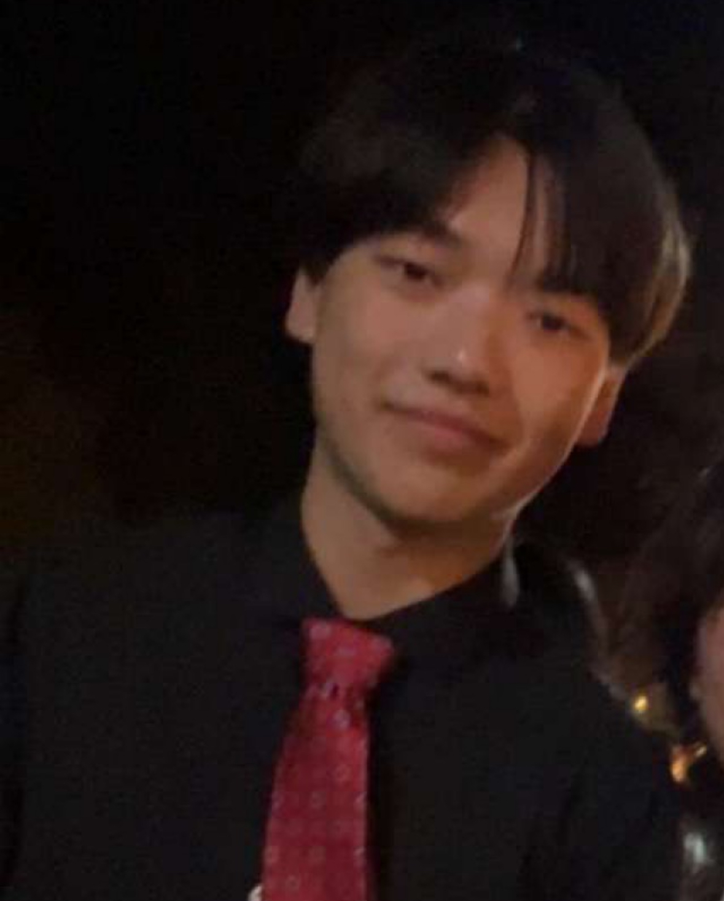
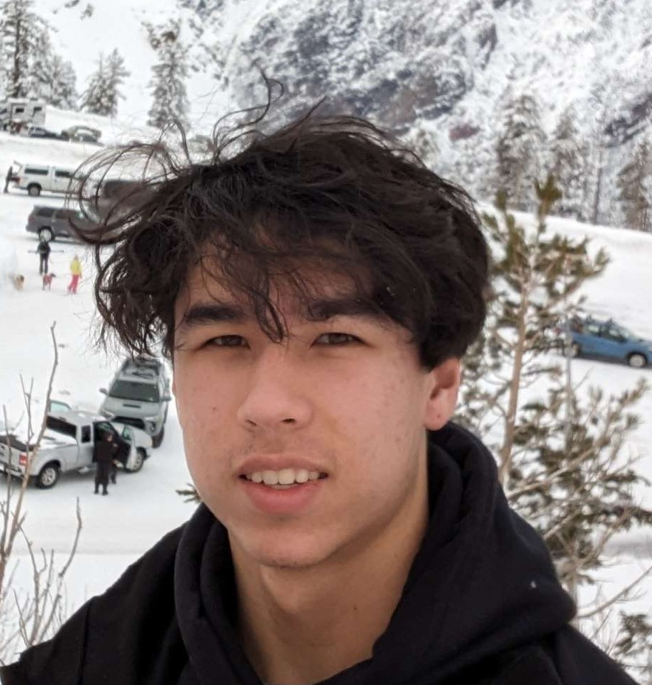

OTAP
Organization Towards
Agricultural Preservation
OTAP is a nonprofit organization dedicated to preserving the environment through local projects in our community that provide small havens of nature.
Thank you to our sponsors!
.png)
.png)
About Us
OTAP (Organization Towards Agricultural Preservation) is a distinguished nonprofit organization dedicated to advancing environmental conservation through impactful projects and initiatives. With a strong focus on preserving and enhancing our natural resources, OTAP strives to create sustainable and lasting solutions that contribute to the well-being of local communities and ecosystems. At the core of OTAP's mission lies the commitment to protect and restore agricultural landscapes, fostering biodiversity, and promoting sustainable farming practices. By collaborating with farmers, landowners, and community stakeholders, OTAP endeavors to establish small havens of nature within our communities. Through the implementation of innovative projects, such as reforestation efforts, watershed protection, and habitat restoration, OTAP aims to preserve and enhance the ecological balance while ensuring the long-term viability of our agricultural heritage.Meet the team!

Arman Royai
President
My name is Arman. When I'm not working on setting up projects for OTAP, I like to spend my time playing video games, hiking, and baking.
Callen Kuwahara
Secretary
Callen is an eccentric fellow with a penchant for making things with his own two hands. His abilities range from metalworking to woodworking, giving him the capabilities to design and materialize designs to help the environment! He drinks tea.

Mark Liu
Vice President
Hi! My name is Mark. I love eating, sleeping, and hanging out with my friends. I also like reading, and playing piano and badminton.
Conrad Madeira
Cheif Financial Officer
Hi my name is Conrad and I like cats. My favorite hobby is martial arts, and my favorite plant is a plum blossom tree.


Adam Mazhara
Chief Technology Officer
I joined this organization to help improve our community by increasing the amount of nature around us in everyday life. My primary job is to run the website, and work on the tech side of things.
Jack Naquin
Webmaster
As the webmaster, I advance our community by optimizing our website for user experience, fostering engagement through interactive platforms, and prioritizing online safety and security.


Alex Rhee
Project Manager
As the project manager, I research and plan our projects to make sure everything runs smoothly and efficiently throughout their duration.
Haley Li
idk
Haley Li is a junior attending Sage Hill School. She enjoys gardening and playing Tetris in her free time. Haley is currently the [insert role here] and is leading a verticle farming project in order to restore endangered Southern Californian plants. Additionally, she is looking into how similar methods can be used to revitalize burnt land.